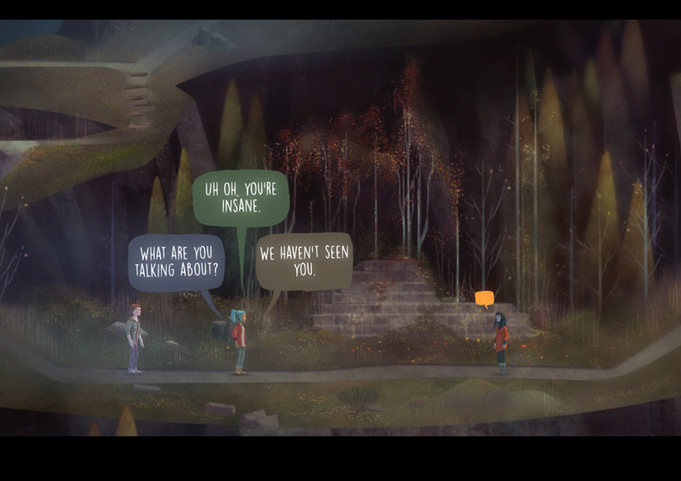

Oxenfree is a supernatural thriller adventure game that blends eerie storytelling with a unique visual style. The game follows a group of teenagers who find themselves on a mysterious island, where they accidentally unlock a series of strange and otherworldly events. As the protagonist, Alex, you’re tasked with uncovering the island’s secrets while dealing with a haunting presence and unraveling the past. The narrative unfolds through a combination of dialogue choices and environmental interactions, where the tension of the plot builds as you dive deeper into the unknown.
The game’s art style is striking, with hand-painted 2D environments and a colorful, almost dreamlike palette that contrasts sharply with the game’s darker themes. The use of muted colors and soft lighting creates an atmospheric setting that feels both nostalgic and unsettling. The characters are designed with simple yet expressive features, allowing their personalities to shine through without being overly detailed, which adds to the indie charm. The blend of these visual elements with a haunting, minimalist soundtrack and dynamic sound design makes Oxenfree a captivating experience, where every visual cue and sound serves to immerse you further into the eerie mystery surrounding the island. The game’s tone and aesthetics are both grounded and surreal, offering a strange beauty in the face of looming danger. This unique art direction complements the narrative perfectly, making the world feel alive and rich with secrets.
